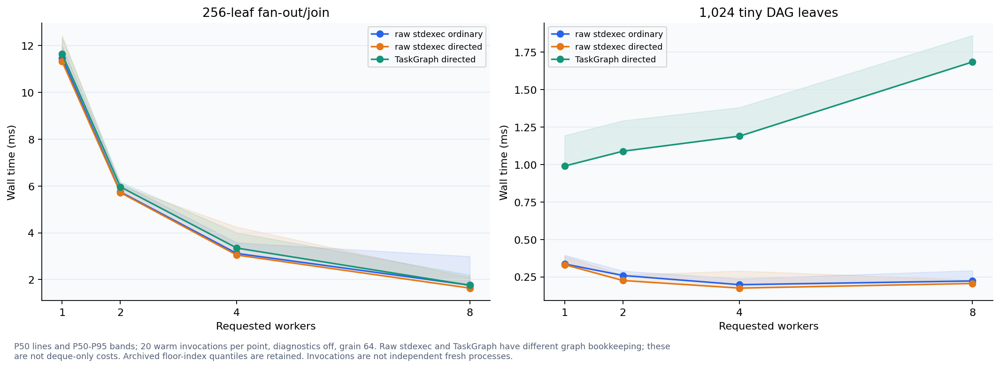
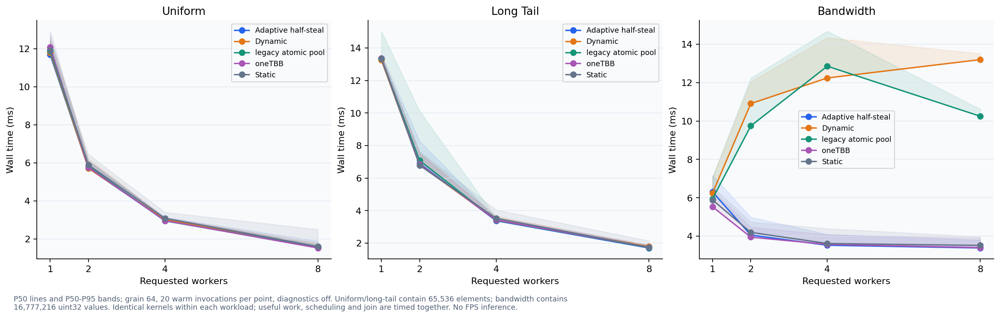
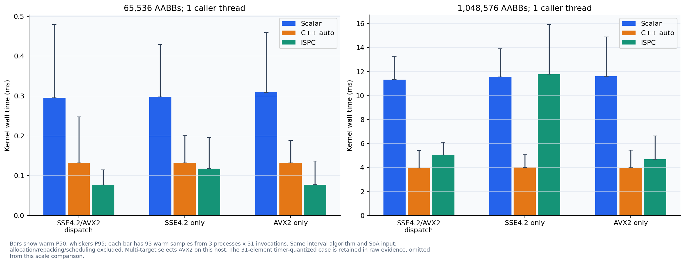
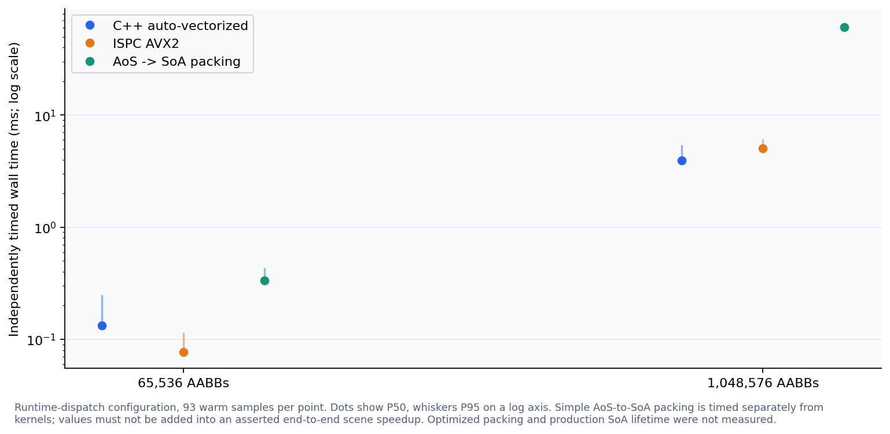
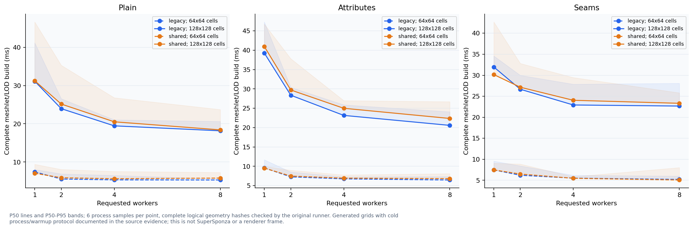

Historical plots use archived 2026-11-06 evidence from C:\Users\11252\.codex\worktrees\3379\metallic\Documentation\Measurements\CPUJobs20261106; they are separate workloads and binaries from production A/B.
Archived scheduler baseline

P50 lines and P50-P95 bands; 20 warm invocations per point, diagnostics off, grain 64. Raw stdexec and TaskGraph have different graph bookkeeping; these are not deque-only costs. Archived floor-index quantiles are retained. Invocations are not independent fresh processes.
Archived range strategies

P50 lines and P50-P95 bands; grain 64, 20 warm invocations per point, diagnostics off. Uniform/long-tail contain 65,536 elements; bandwidth contains 16,777,216 uint32 values. Identical kernels within each workload; useful work, scheduling and join are timed together. No FPS inference.
Archived SIMD kernel isolation

Bars show warm P50, whiskers P95; each bar has 93 warm samples from 3 processes x 31 invocations. Same interval algorithm and SoA input; allocation/repacking/scheduling excluded. Multi-target selects AVX2 on this host. The 31-element timer-quantized case is retained in raw evidence, omitted from this scale comparison.
Archived layout-conversion cost

Runtime-dispatch configuration, 93 warm samples per point. Dots show P50, whiskers P95 on a log axis. Simple AoS-to-SoA packing is timed separately from kernels; values must not be added into an asserted end-to-end scene speedup. Optimized packing and production SoA lifetime were not measured.
Archived generated geometry cooker

P50 lines and P50-P95 bands; 6 process samples per point, complete logical geometry hashes checked by the original runner. Generated grids with cold process/warmup protocol documented in the source evidence; this is not SuperSponza or a renderer frame.